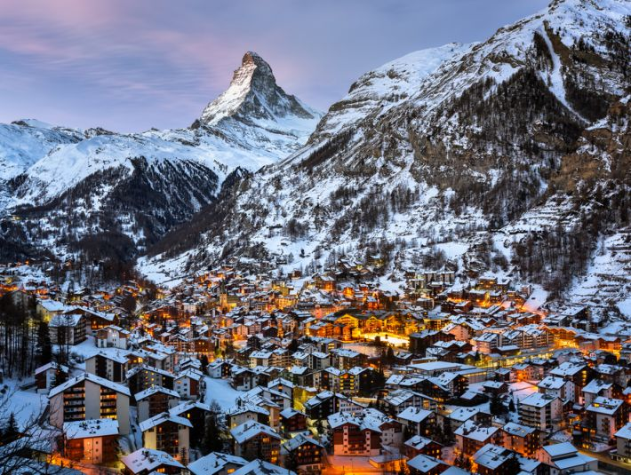
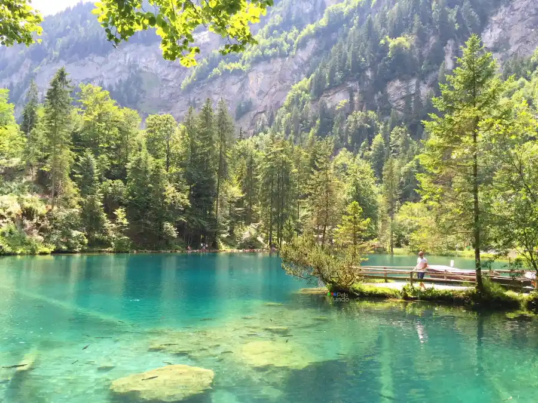
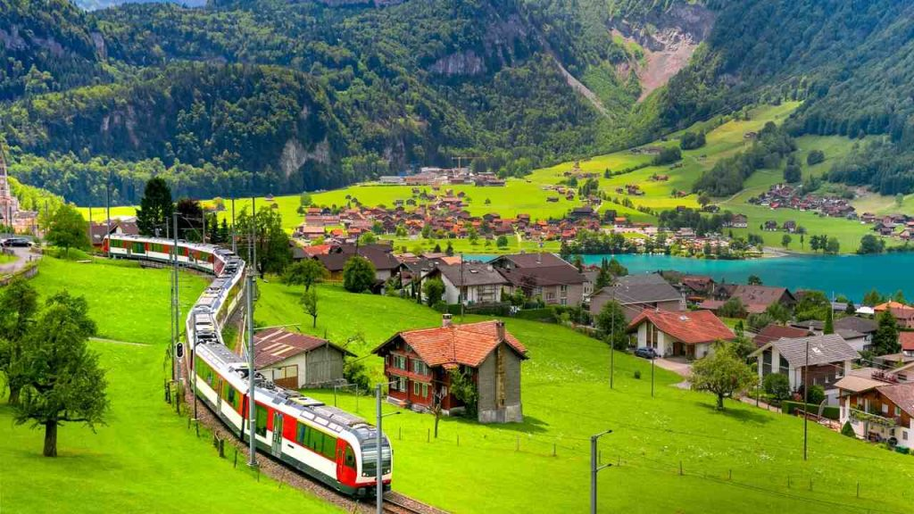
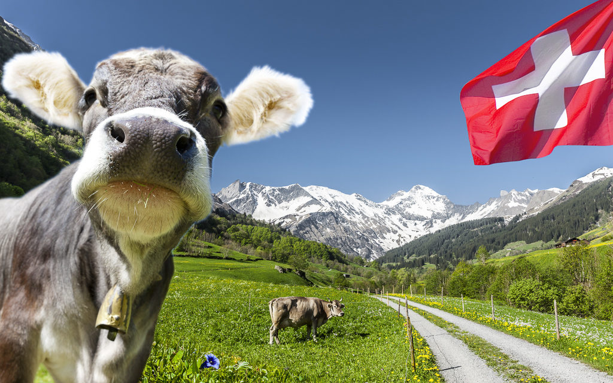

Suíça
Suíça
A Suíça é um país localizado na Europa Central, conhecido por suas paisagens alpinas deslumbrantes, cidades históricas e alta qualidade de vida. O país é famoso por seus relógios de precisão, chocolates finos e bancos seguros. A Suíça é também um importante centro financeiro e sede de várias organizações internacionais. Com uma rica diversidade cultural e quatro idiomas oficiais (alemão, francês, italiano e romanche), a Suíça é um destino turístico popular para aqueles que buscam beleza natural, cultura e história.
Paisagem Suiça



